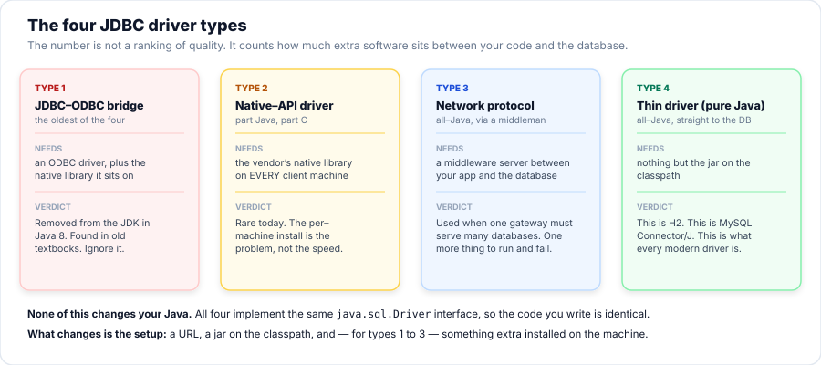
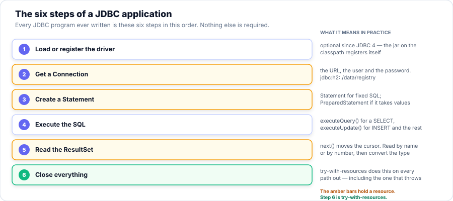

Session 7 — The JDBC API
Your Student Registry has lived in an ArrayList since Session 1, which means it
disappears every time the program closes. Today you give it a database — a real
table on disk, reached through JDBC, the one API Java uses to talk to every database
there is. You will learn the architecture, the six steps every JDBC program follows, how to read a
database's own description of itself, and the single habit — the parameterized query — that
separates code that is safe from code that is one bad input away from disaster.
- Explain what JDBC is, and draw the architecture from your code down to the database, naming who owns each layer.
- Distinguish a two-tier design from a three-tier one, and say why a DAO is worth the extra class.
- Name the four driver types, and explain why a modern program only ever meets type 4.
- Write the six steps of a JDBC program in order, and point to the three that hold a resource.
- Use try-with-resources so every
Connection,StatementandResultSetis closed on every path. - Read a database's structure at runtime with
DatabaseMetaData, and one query's shape withResultSetMetaData. - Write a
PreparedStatementwith?parameters, and read back a database-generated key. - Demonstrate a SQL-injection attack on a concatenated query, and defeat it with a parameter.
- Describe what changes — and what does not — when the database is MySQL on a server instead of embedded H2.
Your Roadmap for Today
Why This Matters
Every program you have written so far forgets everything the moment it stops. The lists, the maps, the tallies — all of it lives in memory, and memory is gone when the process ends. That is fine for a calculation. It is useless for a registry, an inventory, an account, or anything a business actually keeps. Persistence is the difference, and a database is how Java does it.
JDBC — Java Database Connectivity — is the API in the JDK for talking to a database. Its one great idea is that you write your code against an interface, and a vendor-specific driver does the actual talking. Learn JDBC once and you can point it at H2, MySQL, PostgreSQL, Oracle or SQLite — the same code, a different URL. That is why this session teaches the API and not "how to use H2": the API is the transferable skill.
Part 1 of 7 What JDBC Is, and the Architecture
JDBC is a stack of layers. Your code sits at the top and talks only to interfaces in
java.sql.*. Underneath, DriverManager reads your URL and picks a driver; the
driver speaks the database's own language; and the database does the work. The crucial thing is
where the line is drawn: everything above the driver is the same for every database in
the world.

Figure 1 — who owns each layer. You touch only the top one.
Read the figure top to bottom and notice the "stable line". Your application and the
java.sql.* interfaces never change, whatever database you use. The driver and the database
below the line are swappable. Swapping them is a configuration change, not a code change
— and that promise is the whole reason JDBC exists.
java.sql.* — Connection, Statement,
ResultSet, PreparedStatement. These are interfaces. The driver
supplies the classes that implement them, but you never name those classes in your code. That is why
the same program compiles and runs against any database: it depends on the interface, not the
implementation.
Part 2 of 7 Processing Models: Two-Tier and Three-Tier
The manual names two "processing models". The difference is not in JDBC — both use the same
Connection and Statement — it is in where the SQL lives.
- Two-tier: application → database. The SQL is written inline, in whatever method happens to need it. Quick to write, and fine for a tiny program.
- Three-tier: application → DAO → database. The SQL lives in one class — a Data Access Object — that knows only about the table. Callers ask for objects and never see a
ResultSet.
The program below runs the same query both ways. Watch what happens the second time the "honours students" list is needed: the two-tier version copies the SQL; the three-tier version calls a method.
static class StudentDao {
private final Connection c;
StudentDao(Connection c) { this.c = c; }
List<Student> findByMinMark(double min) throws SQLException {
String sql = "SELECT id, name, email, mark FROM students WHERE mark >= ? ORDER BY mark DESC";
List<Student> out = new ArrayList<>();
try (PreparedStatement ps = c.prepareStatement(sql)) {
ps.setDouble(1, min);
try (ResultSet rs = ps.executeQuery()) {
while (rs.next()) {
out.add(new Student(rs.getInt("id"), rs.getString("name"),
rs.getString("email"), rs.getDouble("mark")));
}
}
}
return out;
}
/** Returns null when there is no such row — not an exception. Absence is normal. */
Student findById(int id) throws SQLException {
String sql = "SELECT id, name, email, mark FROM students WHERE id = ?";
try (PreparedStatement ps = c.prepareStatement(sql)) {
ps.setInt(1, id);
try (ResultSet rs = ps.executeQuery()) {
return rs.next()
? new Student(rs.getInt("id"), rs.getString("name"),
rs.getString("email"), rs.getDouble("mark"))
: null;
}
}Part 3 of 7 The Four Driver Types
JDBC drivers come in four types. The number is not a quality ranking — it counts how much extra software sits between your Java and the database. The less there is, the fewer things to install and break, which is why every driver you will actually use today is type 4.

Figure 2 — the four types, and the one that matters.
Rather than take that on faith, E03 asks the JVM which drivers it has loaded, then asks the
live connection what it is. The answer is evidence, not a claim:
One jar on the classpath, one driver registered, and it is pure Java straight to the database — a type 4 driver. H2 is one; MySQL's Connector/J is another. You will likely never meet types 1–3 in new code: type 1 was removed from the JDK in Java 8, and types 2 and 3 need something extra installed on the machine, which is exactly what type 4 avoids.
Part 4 of 7 The Six Steps of a JDBC Program
Every JDBC program ever written is these six steps, in this order. Learn them once and you can read any JDBC code there is — and write it.

Figure 3 — the six steps. The amber ones hold a resource that must be closed.
Here is the smallest complete JDBC program. Read it with the figure beside you: steps 2, 3 and 5 each open something, and the try-with-resources at step 2 closes all of them — step 6 — on every path out, including the one where something throws.
System.out.println("E01 - the six steps of a JDBC application");
// ---- Step 2: get a Connection ------------------------------------------
// Steps 3-6 all live inside the try-with-resources, so the Connection is closed
// on every path out - the normal exit and the one where something throws.
try (Connection connection = Db.open()) {
System.out.println("Connected to H2. version: "
+ connection.getMetaData().getDatabaseProductVersion());
// ---- Step 3: create a Statement ------------------------------------
// A Statement holds no query yet; it is the channel you send SQL down.
// Use PreparedStatement (E05) the moment the SQL contains a value.
try (Statement statement = connection.createStatement()) {
// ---- Step 4: execute the SQL -----------------------------------
// executeQuery() -> returns a ResultSet (a SELECT)
// executeUpdate() -> returns a row count (INSERT, UPDATE, DELETE)
// execute() -> returns a boolean (when you do not know which)
// ---- Step 5: read the ResultSet ---------------------------------
// next() moves the cursor to the next row and answers "was there one?".
// It starts BEFORE the first row, which is why you always call it once
// before reading anything - forgetting that is the classic first bug.
String sql = "SELECT id, name, mark FROM students ORDER BY mark DESC";
System.out.println(Db.rule("step 4 + 5 - execute, then read"));
try (ResultSet rs = statement.executeQuery(sql)) {
int rows = 0;
while (rs.next()) {
// Read by NAME, not by number: a column added to the SELECT
// cannot renumber your code out from under you.
int id = rs.getInt("id");
String name = rs.getString("name");
double mark = rs.getDouble("mark");
System.out.printf(" %-20s id=%-3d mark=%.2f%n", name, id, mark);
rows++;
}
System.out.println(" " + rows + " rows");
}
}Calling next() too late, or not at all. A ResultSet starts
before the first row. You must call next() once before you read anything; it moves
to the next row and returns false when there are no more. A while (rs.next())
loop handles both jobs at once.
Reading columns by number. rs.getString(1) works until someone adds a
column to the SELECT and every number shifts. Read by label —
rs.getString("name") — and your code survives the edit. Practice 3 shows this fault
doing real damage.
Class.forName("org.h2.Driver"). Since JDBC 4
(Java 6) a driver on the classpath registers itself, so that line is no longer needed — the output
above was produced without it. Write it if a grumpy old application server demands it; otherwise leave
it out. Putting the jar on the classpath is step 1.
Part 5 of 7 Database Meta Information
"Meta information" is data about data. JDBC gives you two windows into it, and beginners confuse them, so fix the distinction first:
DatabaseMetaDatadescribes the database — its tables, columns, keys and features. You get it from aConnection.ResultSetMetaDatadescribes one query's result — how many columns it returned, their names, and the Java type each maps to. You get it from aResultSet.
This is how a program can work against a database whose shape it was never told in advance — a
reporting tool, a data browser, or the columnNames() method you will write for Assignment A4.
PUBLIC on purpose. Your own tables live there; H2
keeps its own catalogue (dozens of tables describing the engine itself) in
INFORMATION_SCHEMA. Asking for PUBLIC is what makes the list answer "what did
I create?" rather than "what is H2 built out of?". Every database has this separation.
Part 6 of 7 Parameterized Queries
A PreparedStatement is a statement with holes in it. You write the SQL once with
? where each value goes, then supply the values separately with setString,
setInt, setDouble and friends. That one change buys four things — and most
people only know the first.
String insert = "INSERT INTO students (name, email, course_id, mark) VALUES (?, ?, ?, ?)";
int newId;
// Statement.RETURN_GENERATED_KEYS is how you ask for the auto-numbered id.
try (PreparedStatement ps = c.prepareStatement(insert, Statement.RETURN_GENERATED_KEYS)) {
ps.setString(1, "O'Brien, Riley"); // an apostrophe - no escaping needed
ps.setString(2, "riley@example.com");
ps.setInt(3, 1);
ps.setDouble(4, 77.25);
int rows = ps.executeUpdate();
System.out.println(" inserted " + rows + " row");
try (ResultSet keys = ps.getGeneratedKeys()) {
newId = keys.next() ? keys.getInt(1) : -1;
System.out.println(" the database assigned id = " + newId);
}
}
System.out.println(" note the name: " + "O'Brien, Riley"
+ " — with concatenation that apostrophe would have broken the SQL.");- Safety. A value can never become part of the SQL, so it cannot change what the query means. This is what stops SQL injection — see below.
- Correct types.
setDoublesends a number as a number; the database does not have to parse text and guess. - No quoting bugs. A name with an apostrophe —
O'Brien— is just a value. With string concatenation it is a syntax error at best. - Reuse. One prepared plan, many rows — the
addBatch()/executeBatch()block above inserts three rows against one statement.
The demonstration you will not forget: SQL injection
Here is the whole reason parameters matter, shown both ways on a throwaway table. The attack is a harmless
payload — it just makes the WHERE true for every row — but the point is chilling:
a single lookup changes its own meaning because the input became part of the SQL.
private static void wrongWay(Connection c, String typed) throws SQLException {
String sql = "SELECT id, name, role FROM logins WHERE name = '" + typed + "'";
System.out.println(" typed: " + typed);
System.out.println(" SQL sent: " + sql);
try (Statement st = c.createStatement();
ResultSet rs = st.executeQuery(sql)) {
int n = 0;?. There is no clever case where
concatenation is safe: "it is only a number" and "it comes from our own dropdown" are both exactly how
this bug reaches production. A parameter is data and can never become code —
that is the entire defence, and it is complete.
Part 7 of 7 Databases in the Real World
This course runs on embedded H2 so that every program works offline, on the first day, with nothing
installed. The database most working Java talks to is a server — MySQL or
PostgreSQL on a machine of its own. The good news is the headline of the whole session:
your Java does not change. Only three things do — the jar, the driver class and the
URL — and E07 prints exactly what they are.
Want to actually run against MySQL? The H2 & MySQL guide walks
through installing a server, creating a user, and pointing this exact code at it — including the
three URL parameters local development needs and the dialect differences (AUTO_INCREMENT,
TINYINT(1), CONCAT) that bite when you move. It is optional, and nothing graded
needs it.
🛠 Guided Lab — The Student Registry, on a Database
Now you build it. The registry you have carried in an ArrayList since Session 1 gets a real
table, through a DAO, with every value parameterized. This is Assignment A4 in miniature — finish
the lab and A4 is the same skills with a few more methods.
The DAO you will build
Six steps, each one an idea from this session put to work on data you already know:
int insert(String name, String email, double mark) throws SQLException {
String sql = "INSERT INTO students (name, email, mark) VALUES (?, ?, ?)";
try (PreparedStatement ps = c.prepareStatement(sql, Statement.RETURN_GENERATED_KEYS)) {
ps.setString(1, name);
ps.setString(2, email);
ps.setDouble(3, mark);
ps.executeUpdate();
try (ResultSet keys = ps.getGeneratedKeys()) {
return keys.next() ? keys.getInt(1) : -1;
}
}
}
/** STEP 3 — find by id, or null. */
Student findById(int id) throws SQLException {
String sql = "SELECT id, name, email, mark FROM students WHERE id = ?";
try (PreparedStatement ps = c.prepareStatement(sql)) {
ps.setInt(1, id);
try (ResultSet rs = ps.executeQuery()) {
return rs.next() ? read(rs) : null;
}
}
}
/** STEP 4 — search by name. The ? is what makes the injection attempt harmless. */
List<Student> searchByName(String name) throws SQLException {
String sql = "SELECT id, name, email, mark FROM students WHERE name LIKE ?";
List<Student> out = new ArrayList<>();
try (PreparedStatement ps = c.prepareStatement(sql)) {
ps.setString(1, "%" + name + "%"); // the % is added to the VALUE, not the SQL
try (ResultSet rs = ps.executeQuery()) {
while (rs.next()) out.add(read(rs));
}
}
return out;
}
Work the steps
code/s07-jdbc-api in IntelliJ. Add lib/h2-2.3.232.jar as a library (File → Project Structure → Libraries → +), or let Maven fetch it from the pom.xml.E01_JdbcSteps. Watch the six steps happen, and confirm you see the twelve seeded students. If this runs, your setup is correct.RegistryLab. Find the DAO, and read insert() and searchByName() out loud — those two carry the whole session: a generated key, and a parameterized LIKE.RegistryLab. Confirm Step 4 (the injection attempt) returns 0 rows — the payload is a name that matches nothing, not a condition.jdbc:h2:mem:lab to jdbc:h2:./data/lab, run it twice, and look in the data/ folder. The database is now a file that survives the program.java -cp lib/h2-2.3.232.jar org.h2.tools.Server -web) and browse the table you just created from Java. Seeing the same rows in a second window is the moment it becomes real.⚠️ Common Mistakes
+
String sql = "SELECT * FROM students WHERE name = '" + typed + "'"; // neverWhat happens: input becomes part of the query. The payload ' OR '1'='1 turns one lookup into "return every row" — and nothing throws. Fix: a ? and ps.setString(1, typed). Always.
Connection open
Connection c = DriverManager.getConnection(url, user, pw);
Statement s = c.createStatement();
// ... method returns; nothing was closedWhat happens: one leaked handle per call. Harmless once; "Too many open connections" after a few thousand, and the stack trace points at the call that failed, not the ones that leaked. Fix: try-with-resources, so every Connection, Statement and ResultSet closes on every path.
ResultSet before calling next()
ResultSet rs = ps.executeQuery();
String name = rs.getString("name"); // SQLException: no current rowWhat happens: the cursor starts before the first row. Fix: if (rs.next()) { ... } for one row, or while (rs.next()) { ... } for many.
rs.getString(1); // breaks the day someone adds a column to the SELECTWhat happens: add a column at the front of the SELECT and every number shifts by one — silently. Fix: read by label, rs.getString("name"), which does not care how many columns came before it.
Statement for a query with values
A Statement is for fixed SQL with no inputs. The moment a value appears, switch to a PreparedStatement — not for speed, for safety. If you find yourself about to concatenate, that is the signal.
🧠 Knowledge Check
Ten questions on the JDBC API. If you disagree with one, argue it — that is a code review.
DriverManager.getConnection(url, ...) matches the URL to a registered driver.Class.forName("org.h2.Driver")?ResultSet cursor starts…while (rs.next()) is the standard loop.PreparedStatement with ? is…"... WHERE name = '" + input + "'" and a user types ' OR '1'='1. What happens?? parameter makes the same input a harmless string.ResultSetMetaData describes one result; DatabaseMetaData describes the whole database.AutoCloseable — Connection, Statement, ResultSet — closes automatically, in reverse order.💪 Practice
🌱 Easy: the six steps, once, with no help
Write the smallest complete JDBC program: connect to an in-memory database, create a table, insert one
row, and read it back — then notice you wrote no driver class, no Class.forName, and
no finally.
💡 Hint
Two try-with-resources blocks: one to create and insert, one to read back. Keep the URL the same in both — jdbc:h2:mem:p1;DB_CLOSE_DELAY=-1 — so the second connection still sees the table.
✅ Solution
package com.aptech.s07.practice;
import java.sql.Connection;
import java.sql.DriverManager;
import java.sql.PreparedStatement;
import java.sql.ResultSet;
import java.sql.SQLException;
import java.sql.Statement;
/**
* PRACTICE 1 (Easy) — the six steps, once, with no help.
*
* <p>Write the smallest complete JDBC program: connect to a database that exists only in
* memory, create a table, put one row in, and read it back. Nothing here is new — it is E01
* with the training wheels off.
*
* <p>Then notice what you did NOT have to write: no driver class name, no <code>Class.forName</code>,
* no <code>finally</code> block. Those three omissions are the whole of JDBC since Java 6.
*
* <p><strong>Expected output:</strong> the row you inserted, printed back to you.
*/
public class P1_ConnectAndCreate {
public static void main(String[] args) throws SQLException {
System.out.println("P1 - connect, create, insert, read back");
// An in-memory database: exists only while this program runs. DB_CLOSE_DELAY=-1
// keeps it alive until the JVM exits, so the second connection below still sees it.
String url = "jdbc:h2:mem:p1;DB_CLOSE_DELAY=-1";
// ---- create and fill (steps 2-4, with step 6 handled by try-with-resources) ----
try (Connection c = DriverManager.getConnection(url, "sa", "");
Statement st = c.createStatement()) {
st.execute("CREATE TABLE books ("
+ " id INT GENERATED BY DEFAULT AS IDENTITY PRIMARY KEY,"
+ " title VARCHAR(120) NOT NULL,"
+ " author VARCHAR(80))");
st.executeUpdate("INSERT INTO books (title, author) VALUES ('Effective Java', 'Bloch')");
System.out.println(" created the table and inserted one row");
}
// the connection is closed here - and the database is still there, because
// DB_CLOSE_DELAY=-1 keeps the in-memory database until the JVM exits.
// ---- read it back in a SECOND connection (proving the data outlived the first) ----
try (Connection c = DriverManager.getConnection(url, "sa", "");
Statement st = c.createStatement();
ResultSet rs = st.executeQuery("SELECT id, title, author FROM books")) {
while (rs.next()) {
System.out.printf(" read back: id=%d \"%s\" by %s%n",
rs.getInt("id"), rs.getString("title"), rs.getString("author"));
}
}
System.out.println("\nNo Class.forName, no finally, and the row survived the close.");
}
/**
* The same insert, done the way you would in real code: a PreparedStatement, so the
* values cannot change the SQL. Included here as the shape to copy from Step 5 onward.
*/
@SuppressWarnings("unused")
private static void insertTheRightWay(Connection c, String title, String author) throws SQLException {
String sql = "INSERT INTO books (title, author) VALUES (?, ?)";
try (PreparedStatement ps = c.prepareStatement(sql)) {
ps.setString(1, title);
ps.setString(2, author);
ps.executeUpdate();
}
}
}🌞 Medium: a two-table query behind a parameterized method
Write a DAO method that answers "who is on this course?" The data is split across two tables, so the
query needs a JOIN; the course name is input, so it needs a ?. The caller
must get back objects — never a ResultSet.
💡 Hint
SELECT ... FROM students s JOIN courses c ON c.id = s.course_id WHERE c.title = ?. Convert each row to a record inside the DAO, add it to a list, and return the list once the ResultSet is closed.
✅ Solution
/** The DAO: it owns the JOIN, and it hands back objects. */
static class CourseDao {
private final Connection c;
CourseDao(Connection c) { this.c = c; }
List<Enrolment> findByCourse(String courseTitle) throws SQLException {
String sql = "SELECT s.name, c.title, s.mark, c.credits "
+ "FROM students s JOIN courses c ON c.id = s.course_id "
+ "WHERE c.title = ? "
+ "ORDER BY s.mark DESC";
List<Enrolment> out = new ArrayList<>();
try (PreparedStatement ps = c.prepareStatement(sql)) {
ps.setString(1, courseTitle); // one ?, one value, no concatenation
try (ResultSet rs = ps.executeQuery()) {
while (rs.next()) {
out.add(new Enrolment(rs.getString("name"), rs.getString("title"),
rs.getDouble("mark"), rs.getInt("credits")));
}
}
}
return out;🌟 Challenge: three faults, and the fix for each
One small program carries three real JDBC faults: a concatenated query, a leaked connection, and a column read by number. Name each one before you run it; the output is the check on your answer.
💡 Hint
Each fault throws nothing — that is what makes them dangerous. The concatenated query returns too many rows; the leak shows only under a loop; the by-number read is simply the wrong value, and was right until someone edited the SELECT.
✅ Solution
private static void fault1(String url) throws SQLException {
System.out.println("\n=== FAULT 1 - a statement glued together from input " + "=".repeat(14));
String typed = "' OR '1'='1";
try (Connection c = DriverManager.getConnection(url, "sa", "")) {
// BROKEN
String brokenSql = "SELECT name FROM students WHERE name = '" + typed + "'";
int brokenCount;
try (Statement st = c.createStatement();
ResultSet rs = st.executeQuery(brokenSql)) {
brokenCount = 0;
System.out.println(" broken: " + brokenSql);
while (rs.next()) { System.out.println(" -> " + rs.getString("name")); brokenCount++; }
}
System.out.println(" broken returned " + brokenCount + " rows for a one-name lookup");
// FIXED
String fixedSql = "SELECT name FROM students WHERE name = ?";
int fixedCount;
try (PreparedStatement ps = c.prepareStatement(fixedSql)) {
ps.setString(1, typed);
try (ResultSet rs = ps.executeQuery()) {
fixedCount = 0;
while (rs.next()) fixedCount++;
}
}
System.out.println(" fixed returned " + fixedCount + " rows <- the ? is a value, not code");
System.out.println(" " + (brokenCount > fixedCount
? "VERDICT: the broken version returned data the caller never asked for."
: "VERDICT: no difference?! check the data"));
}
}
// ========================================================================
// FAULT 2 — a resource opened and never closed📋 Assignment A4 — Student Registry on H2
Take the Student Registry you have carried since Session 1 and put it on an embedded H2 database
through JDBC. The starter is code/a4-student-registry-jdbc-starter; complete
StudentRegistry.java until SelfCheck reports all PASS.
What you implement (each is a method with a TODO):
createSchema()— two tables, safe to call twice (IF NOT EXISTS).insert(...)— add a student and return the database-generated id.findById(id)— one student, ornullwhen there is none.searchByName(text)— a parameterizedLIKEsearch.SelfCheckfires an injection at it; it must return nothing.updateMarkanddelete— each returns the number of rows changed.count()andcolumnNames()— the latter read fromDatabaseMetaData, not hard-coded.
SelfCheck reports all PASS, from a clean build, every run.?. The injection check passes because there is no concatenation anywhere.Connection, Statement and ResultSet is closed with try-with-resources; no connection is held in a field.read() maps a row to an object; column reads are by label; names are clear.Deliberately not in A4: transactions (commit/rollback). Those are Session 8, which extends this same registry — so keep your code, you will build on it.
SQLException or suggest where a leak is — not to write
your DAO. If it hands you SQL built with +, you have just caught it making the exact mistake
this session exists to prevent. Type and understand your own methods; you will defend any line in the viva.
📺 Further Study
Each video was checked to exist and match the topic.
Read (official & trusted)
- Oracle — the JDBC tutorial, especially "Processing SQL Statements" and "Establishing a Connection".
- Java 25 API — the
java.sqlpackage:Connection,PreparedStatement,ResultSet,DatabaseMetaData. - This course's H2 & MySQL guide — the hands-on companion to Part 7, including running against a real MySQL server.
- H2 — the official tutorial, including the Console you used in the lab.
📋 Cheat Sheet — JDBC in one screen
The six steps
try (Connection c = DriverManager.getConnection(url, user, password); // 2
PreparedStatement ps = c.prepareStatement( // 3
"SELECT id, name FROM students WHERE mark >= ?")) {
ps.setDouble(1, 80.0); // bind values
try (ResultSet rs = ps.executeQuery()) { // 4
while (rs.next()) { // 5
System.out.println(rs.getInt("id") + " " + rs.getString("name"));
}
}
} // 6 - every resource closed here, even if something threw. Step 1 is automatic.Execute: which method?
executeQuery() // a SELECT -> returns a ResultSet
executeUpdate() // INSERT / UPDATE / DELETE -> returns a row count
getGeneratedKeys()// after an INSERT with Statement.RETURN_GENERATED_KEYSThe one rule: every value is a parameter
// NEVER
"... WHERE name = '" + input + "'" // one bad input returns the whole table
// ALWAYS
PreparedStatement ps = c.prepareStatement("... WHERE name = ?");
ps.setString(1, input); // input is data, and can never become codeRead the ResultSet correctly
while (rs.next()) { // cursor starts BEFORE row 1; next() moves and tests
rs.getString("name"); // by LABEL, not rs.getString(1) - survives an edited SELECT
}Metadata: two different windows
c.getMetaData() // DatabaseMetaData - the whole database: tables, columns, keys
rs.getMetaData() // ResultSetMetaData - this one query: column count, names, typesSwitching database = three things
H2 jdbc:h2:./data/registry org.h2.Driver h2-*.jar
MySQL jdbc:mysql://localhost:3306/registry com.mysql.cj.jdbc.Driver mysql-connector-j-*.jar
# the Java above does not change at all🎓 Session Summary
- JDBC is the standard API for talking to a database. You program against
java.sql.*interfaces; a driver does the vendor-specific work. - The architecture draws a stable line. Your code and the
java.sqlinterfaces never change; the driver and database below the line are swappable. - A DAO (three-tier) earns its keep the moment a query is needed twice. The SQL lives in one place and callers get objects, not a
ResultSet. - Only type 4 drivers matter today. Pure Java, just a jar — H2 and Connector/J are both type 4.
- Every JDBC program is six steps. Load (automatic), connect, create a statement, execute, read, close — and try-with-resources does the closing on every path.
- A
ResultSetstarts before the first row. Callnext()once to reach it; read columns by label, not number. - Metadata lets a program read a database it was never told about.
DatabaseMetaDatafor the database,ResultSetMetaDatafor one query. - A
PreparedStatementwith?is the one habit that stops SQL injection. A parameter is data and can never become code. - Concatenating input into SQL is never safe. You watched
' OR '1'='1return a whole table from one lookup. - Changing database is three things: the jar, the driver class, and the URL. The Java stays put — which is the entire point of the API.
- JDBC
- Java Database Connectivity: the JDK's API for talking to a relational database.
- Driver
- The vendor's jar that implements the
java.sqlinterfaces for one database. - DriverManager
- The class that reads a JDBC URL and hands back a
Connectionfrom the matching driver. - Connection
- An open session with the database. A resource: close it when done.
- Statement
- A channel for fixed SQL with no input values.
- PreparedStatement
- A statement with
?placeholders; values are bound separately and can never become SQL. - ResultSet
- A cursor over the rows a query returned. Starts before row one;
next()advances it. - DAO
- Data Access Object: a class that owns the SQL for one table and hands callers objects.
- Two-tier / three-tier
- SQL written inline (two-tier) versus SQL behind a DAO (three-tier).
- DatabaseMetaData
- A description of the database itself: tables, columns, keys, features.
- ResultSetMetaData
- A description of one query's result: column count, names and types.
- Generated key
- The id a database assigns to an inserted row, read with
getGeneratedKeys(). - SQL injection
- An attack where input concatenated into SQL changes the query's meaning.
- Parameterized query
- A query whose values are bound through
?— the defence against injection. - Embedded database
- A database that runs inside your program, as a library and a file — H2.
commit and
rollback), batch operations, and connection pooling, and extends this same A4 registry to
use them. Bring your working A4.